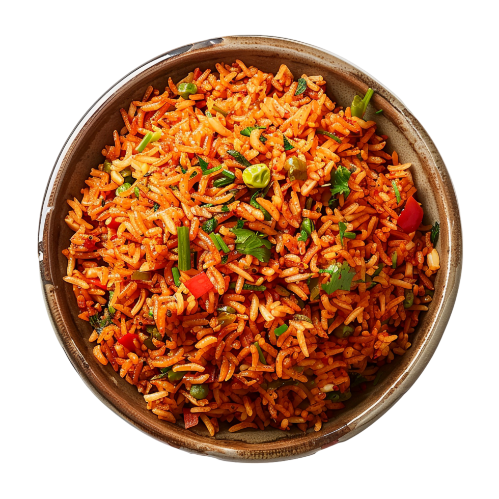

Foolproof guide to cooking Africas greatest dish
By Conan Olatunji, Updated (21-02-2025)
Combine tomato, red bell pepper, habanero pepper, fresno chili, garlic, ginger, and water in a blender for the sauce. Blend on high until smooth and set aside.
Heat olive oil in a saucepan over medium heat. Add onion and salt and sauté until onion starts to soften, 4 to 5 minutes. Clear space in the middle of the pan, add tomato paste, and sauté for 2 to 3 minutes. Season with paprika, curry powder, cumin, thyme, pepper, and turmeric; continue cooking for 1 to 2 minutes until everything is well combined.
Turn off the heat, and stir in the rice, making sure every grain of rice is coated with the oil-tomato mixture. Add bay leaf and chicken bouillon paste.
Turn heat to high, stir in tomato sauce, and bring to a vigorous simmer. Cover with a tight fitting lid, reduce heat to medium-low, and simmer for 20 minutes. Do not remove the lid or stir rice.
Turn off heat after 20 minutes, and set the timer for 12 minutes. Allow rice to sit and do not remove the lid.
After the 12 minutes are up, remove lid, and fluff rice with a fork, separating all the grains. Serve garnished with green onions and chopped cilantro.